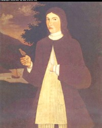

Pieter De Wandelaer
Pieter De Wandelaer was born in September 1713. He was the son of Johannes De Wandelaer, Jr. and his wife, Elizabeth Gansevoort De Wandelaer. He grew up in a large family in a merchant's house on Market Street. His father also owned farmland at Schaghticoke. 
His first wife was Ariaantie Van Vechten. She died following the birth of their second child in 1750. In March 1753, he married Anna Bogardus Van Vechten, a twenty-eight-year-old widow with a small child of her own. By 1763, his second marriage had produced three more children who also were christened at the Albany Dutch church.
Pieter De Wandelaer was a businessman and landholder who owned a number of buildings and lived in the third ward. He also may have had a second home on a farm in the countryside.
In 1737, he was appointed constable for the third ward. In 1743, he was named firemaster. And in 1752 and 1753, he was elected assistant alderman. He was a contractor of the city and the city council occasionally met at his home. In 1763, he was included on a list of Albany freeholders.
During the War for Independence, he contributed supplies for the American cause, was paid for services, and hosted a meeting of the Committee of Correspondence at his house in November 1776.
Pieter De Wandelaer's holdings were valued on city assessment rolls. He was last heard from when his account was paid by the Albany city government in September 1781. Also, a Pieter De Wandelaer witnessed a lease for Montgomery County farmland in November 1787.
Portrait: Titled "Pau De Wandelaer," this is one of the best known of the Albany limner paintings. It has been attributed to Pieter Vanderlyn. Often reproduced, the original is in the collection of the Albany Institute of History and Art. We are in good company in stating/hoping that it represents this Pieter De Wandelaer. However, evidence for so identifying the subject of this classic painting is inconclusive.